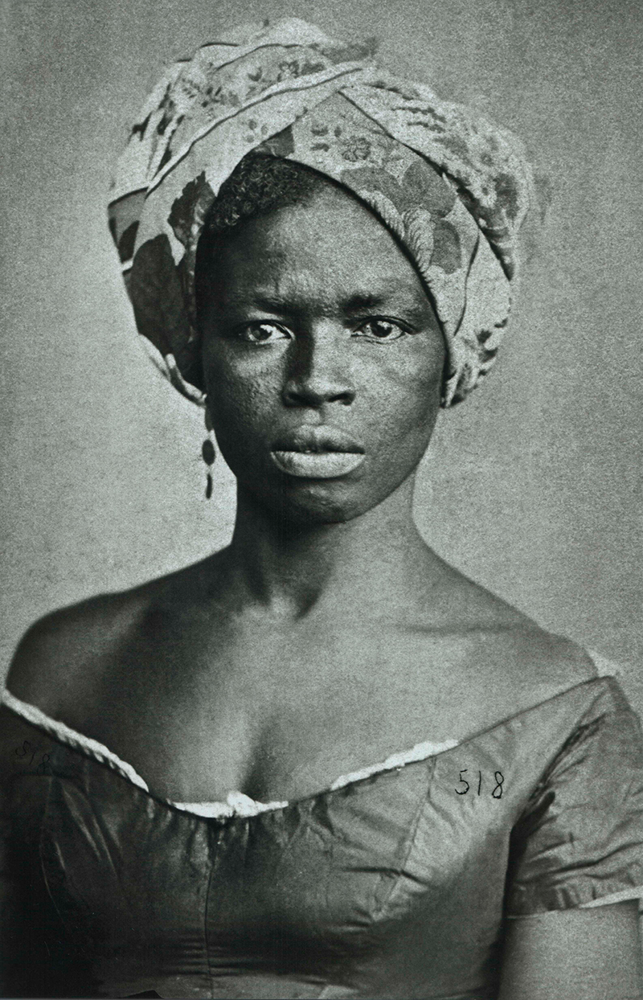
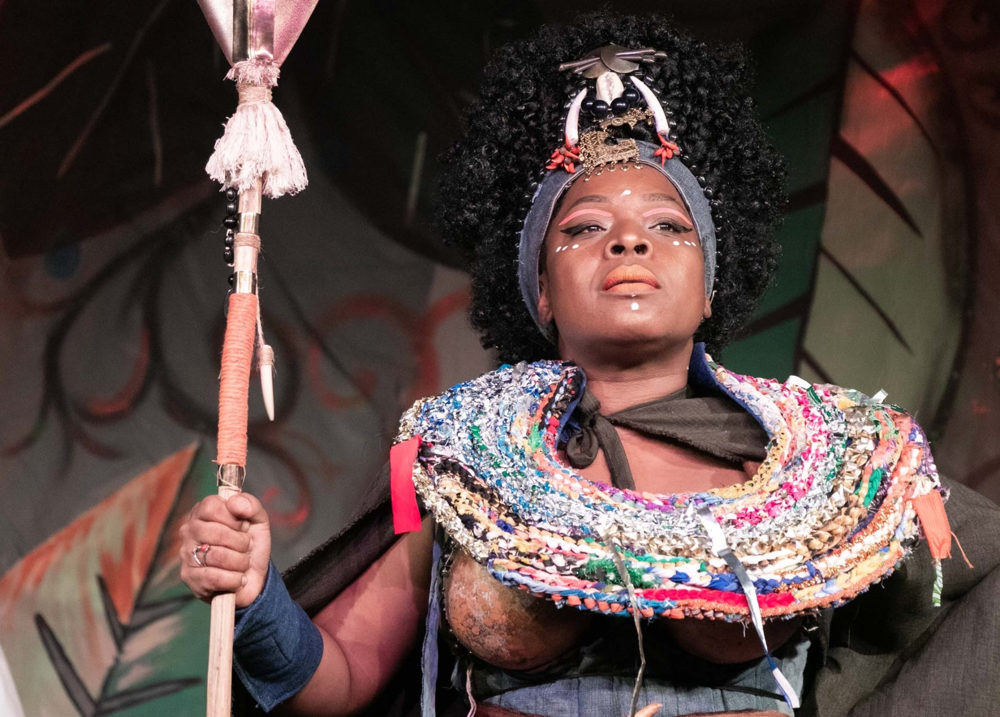
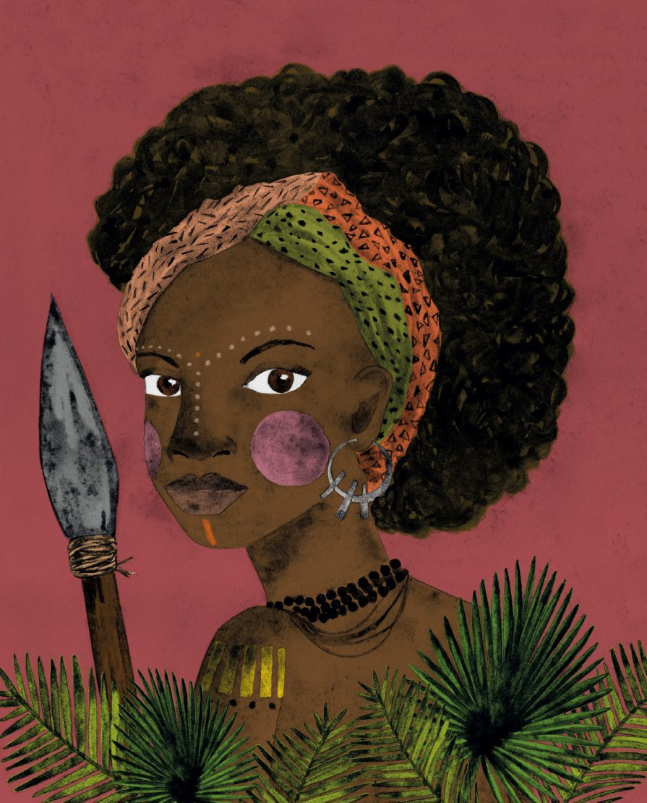
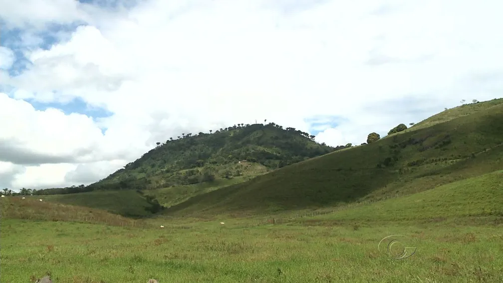

circa 1655
Nascimento aproximado de Dandara, nascida possivelmente na África ou nas senzalas do Brasil colonial. Pouco se sabe sobre seus primeiros anos, mas cresceu sob a opressão do sistema escravocrata.

"Não nasci para ser submissa, nasci para ser livre e lutar pelo meu povo."
Frase atribuida a Dandara dos Palmares
Imagem: Blog do Enem, “Dandara, Acotirene e Aqualtune: as mulheres mais influentes de Palmares”, via Blog do Enem, 13 maio 2025.
Trajetória inicial: origens, resistência e luta pela liberdade

Imagem: Dandara dos Palmares, via Tribunal de Justiça do Estado do Rio de Janeiro (TJRJ).
Dandara dos Palmares foi uma guerreira e estrategista militar que viveu durante o século XVII no Brasil colonial, especificamente no Quilombo dos Palmares, localizado na região de Alagoas. Nascida nas senzalas ou capturada durante as diásporas forçadas da África, Dandara viveu sob o jugo da escravidão antes de conquistar sua liberdade e encontrar refúgio no quilombo. No quilombo, não apenas reencontrou a dignidade humana, mas se tornou uma figura central de resistência e liderança, participando ativamente das estratégias militares e políticas de defesa contra os ataques coloniais. Sua inteligência estratégica, coragem e dedicação à liberdade a tornaram uma das mulheres mais importantes da história de resistência negra no Brasil.
Dandara foi companheira de Zumbi dos Palmares, o líder mais conhecido do quilombo, mas sua importância não se reduz à sua relação com ele. Ela era uma estrategista militar, participava das decisões políticas do quilombo e era responsável por mobilizar mulheres, crianças e idosos em tempos de ataque. Durante as batalhas contra as forças coloniais que buscavam destruir o Quilombo dos Palmares, Dandara lutou na frente, demonstrando destreza no combate e coragem incomparável. Seu ato final — escolher a morte pela liberdade ao saltar de um penhasco para não ser capturada pelas forças coloniais — consolidou seu legado como símbolo supremo da resistência negra e da recusa em aceitar a escravidão. Sua vida e morte permanecem como testamento do espírito indomável de liberdade que caracterizou o Quilombo dos Palmares.
Nascimento aproximado de Dandara, nascida possivelmente na África ou nas senzalas do Brasil colonial. Pouco se sabe sobre seus primeiros anos, mas cresceu sob a opressão do sistema escravocrata.
Dandara consegue sua liberdade e se refugia no Quilombo dos Palmares, espaço de resistência formado por africanos escravizados e seus descendentes. No quilombo, encontra comunidade, segurança e oportunidade de lutar pela liberdade coletiva.
Dandara torna-se figura destacada no Quilombo dos Palmares. Participa de estratégias de defesa contra ataques coloniais e é reconhecida por sua liderança, coragem e dedicação à causa da libertação. Forma relacionamento com Zumbi.
O Quilombo dos Palmares enfrenta seus ataques mais intensos. As forças coloniais, lideradas por Bartolomeu Bueno de Gusmão, intensificam operações militares visando destruir o quilombo e capturar seus líderes, incluindo Zumbi e Dandara.
Zumbi é capturado e executado pelas forças coloniais em novembro de 1695. Dandara continua liderando a resistência e mobilizando os quilombolas que permanecem em liberdade, recusando-se a render-se.
Dandara continua na luta contra as forças coloniais que ainda buscam destruir completamente o quilombo e capturar seus remanescentes. Sua liderança é crucial para a resistência contínua do povo quilombola.
Dandara é capturada pelas forças coloniais durante operações militares. Enfrentando a iminência da recaptura à escravidão, escolhe a morte em liberdade, saltando de um penhasco para não ser devolvida à escravidão. Seu ato permanece como símbolo de resistência absoluta.
O nome de Dandara permanece na memória e na luta dos povos negros brasileiros. Celebrada como heroína, mártir e símbolo de resistência, sua trajetória inspira gerações na luta pela justiça racial e pela liberdade.

Foto: Ana Lucia Albuquerque/CORREIO, “Dandara na Terra dos Palmares”, via Jornal Correio, 5 maio 2024.
Dandara dos Palmares é extraordinária porque enfrentou uma das estruturas mais brutais de opressão jamais criadas — a escravidão — e não apenas se libertou individualmente, mas dedicou sua vida à libertação coletiva de seu povo. Em um contexto onde as mulheres negras enfrentavam dupla opressão — pelo gênero e pela raça — Dandara não aceitou ser vítima. Ela se tornou estrategista, guerreira e liderança política, participando ativamente das decisões que afetavam a vida de centenas de pessoas no quilombo.
O que torna Dandara ainda mais notável é sua recusa absoluta em comprometer sua liberdade. No momento em que foi capturada, enfrentando a possibilidade de ser devolvida à escravidão, escolheu a morte com dignidade. Este ato não foi desesperação, mas uma afirmação política e espiritual: nenhuma força do mundo poderia a devolver à escravidão. Sua morte foi um ato de resistência, uma declaração de que era melhor morrer livre do que viver escravizada.
Além disso, Dandara desafiou a narrativa colonial que tentava apagar as mulheres negras da história. Ela provou que mulheres negras eram capazes de liderar, de lutar, de estrategizar e de inspirar gerações. Sua trajetória mostra que a resistência negra não era apenas obra de homens, mas de mulheres fortes, inteligentes e comprometidas com a coletividade. Por tudo isso, Dandara não é apenas uma figura histórica, mas um símbolo eterno de resistência, liberdade e dignidade humana.
Influência sobre lutas de resistência, memória negra e consciência de liberdade.
O legado de Dandara dos Palmares permeia toda a história de resistência negra no Brasil e na diáspora africana. Primeiro, ela consolidou uma imagem de mulher negra como protagonista de sua própria libertação, não como vítima passiva da escravidão. Seu exemplo abriu espaço para que gerações futuras de mulheres negras entendessem que a liberdade era uma luta, uma conquista e um direito inalienável. Segundo, Dandara demarcou que a resistência negra era questão de vida ou morte, de dignidade ou escravidão — não havia meio termo. Seu ato final de saltar o penhasco em liberdade tornou-se símbolo de que existem lutas que vale a pena travar até o fim, que existem valores que são maiores que a própria vida.
Além disso, o legado de Dandara está na forma como ela transformou a história do Quilombo dos Palmares em símbolo de resistência absoluta. Junto com Zumbi, sua liderança demonstrou que era possível criar alternativas ao sistema escravocrata, que era possível viver em liberdade e dignidade mesmo sob ameaça constante. Hoje, Dandara é celebrada como símbolo do Dia da Consciência Negra no Brasil, sua memória é honrada em movimentos sociais, artes e educação. Seu nome aparece em escolas, em obras de arte e em narrativas que reafirmam a importância das mulheres negras na construção de um Brasil livre. Seu legado continua inspirando mulheres negras contemporâneas a lutarem por sua liberdade, dignidade e igualdade, mostrando que o espírito de resistência de Dandara não morreu com ela, mas permanece vivo em cada ato de resistência e recusa da opressão.
Fotos, representações e registros históricos.

Representação artística de Dandara dos Palmares, guerreira negra símbolo da resistência quilombola, destacando sua força na luta pela liberdade e na defesa do Quilombo dos Palmares.
Ilustração: Lole / Cedida pela Companhia das Letras, via Estadão.

Vista da Serra da Barriga, em Alagoas, território histórico do Quilombo dos Palmares e símbolo da resistência negra contra a escravidão no Brasil.
Foto: Reprodução/TV Gazeta, “Quilombo dos Palmares, antigo refúgio de negros escravizados, é patrimônio cultural internacional”, via g1 Alagoas, 20 nov. 2021.

Monumento dedicado a Dandara dos Palmares, em celebração à sua coragem e ao seu papel na resistência negra, simbolizando a luta pela liberdade e a memória histórica do Quilombo dos Palmares.
Imagem: Fundação Cultural Palmares, “Dandara e Zumbi dos Palmares”, via Gov.br.
Livros, artigos e documentos históricos.
Obra que resgata a história do Quilombo dos Palmares com ênfase nas contribuições de Dandara e outras mulheres guerreiras. Link: https://www.amazon.com.br/
Coletânea de estudos sobre mulheres quilombolas, incluindo análises profundas sobre a vida e legado de Dandara dos Palmares. Link: https://www.amazon.com.br/
Ensaio acadêmico que analisa como a história oficial tentou apagar a importância de Dandara e como sua memória está sendo resgatada. Link: https://www.jstor.org/
Artigo com visão geral da vida, atuação política e importância de Dandara na resistência quilombola. Link: https://pt.wikipedia.org/wiki/Dandara
Documentário que retrata a vida no quilombo, a resistência contra as forças coloniais e o papel crucial de Dandara como liderança. Link: https://www.youtube.com/
Informações e documentação sobre o Sítio Arqueológico do Quilombo dos Palmares, incluindo vestígios de vida e resistência de Dandara. Link: https://www.iphan.gov.br/
Conheça outras trajetórias marcantes da luta por justiça e transformação social.

Foto: John Mathew Smith / www.celebrity-photos.com, via Wikimedia Commons.
Simbolo da luta contra a segregação racial nos Estados Unidos e referência mundial em coragem civil.
Saiba mais
Imagem: representação de Bartolina Sisa em cédula boliviana — via Banco Central da Bolívia.
Estrategista quilombola cuja resistência ajudou a marcar a luta negra por liberdade no Brasil lorem.
Saiba mais
Imagem: representação de Bartolina Sisa em cédula boliviana — via Banco Central da Bolívia.
Intelectual fundamental para os debates sobre feminismo negro, cultura e desigualdade racial no Brasil.
Saiba mais
Imagem: representação de Bartolina Sisa em cédula boliviana — via Banco Central da Bolívia.
Liderença indigêna e jurista que ampliou a presença dos povos originários nos espaços de decisão.
Saiba mais